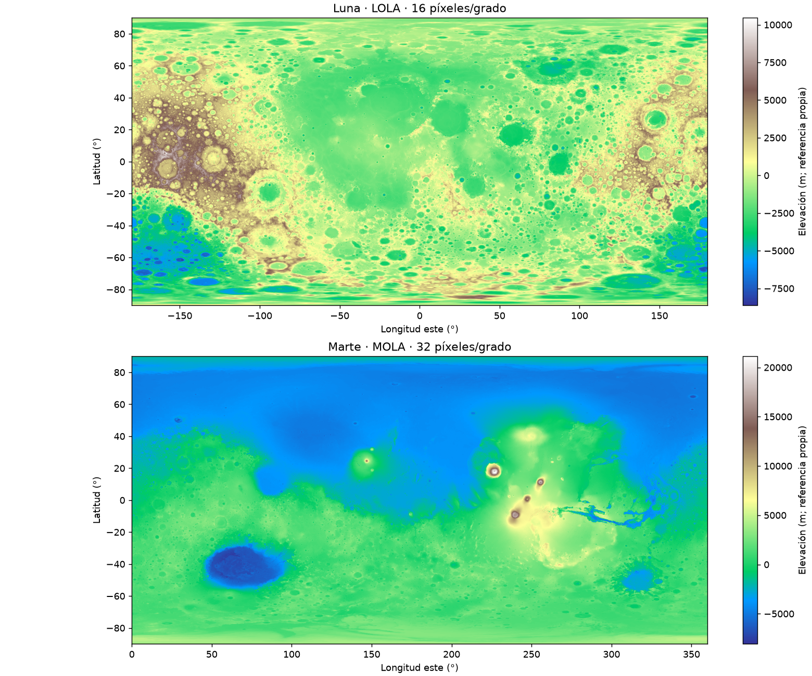
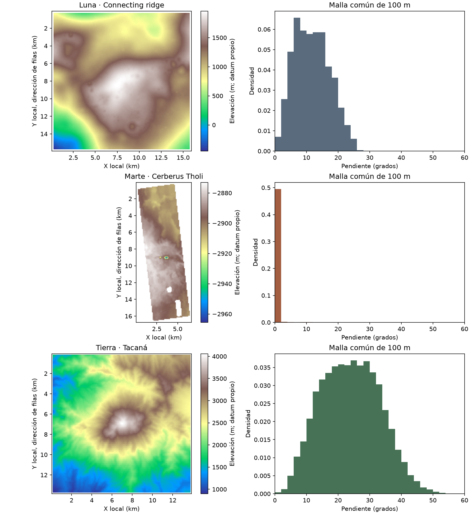

Datos NASA de Luna y Marte
Base de elevación, pendientes e imágenes para análisis. Datos originales separados de los derivados calculados aquí.
22 archivos descargados · 736.3 MiB
Relieve global de ambos cuerpos, dos ejemplos regionales detallados y un índice oficial de 1,377 DTM y 11,384 ortoimágenes HiRISE.
Alcance: esta colección inicial y sus catálogos no son una descarga de todos los archivos NASA. Los rasters de las demás regiones permanecen en sus servidores oficiales. El índice permite elegir y ampliar la colección.
Qué está disponible
- Luna global: elevación LRO/LOLA, 16 píxeles por grado, aproximadamente 1,90 km en el ecuador. TIFF float32 en kilómetros; multiplicar por 1.000 para metros.
- Marte global: MGS/MOLA, 32 píxeles por grado, aproximadamente 1,85 km en el ecuador. IMG entero de 16 bits big-endian en metros, con etiquetas PDS3/PDS4, cabecera ENVI y mapa de conteos.
- Luna regional: Connecting ridge, Site01, malla LOLA de 5 m; elevación, pendiente publicada, conteos e incertidumbre. Solo 9.5% de sus celdas contienen retornos directos: el resto utiliza interpolación.
- Marte regional: cumbre de uno de Cerberus Tholi, DTM HiRISE de 2,0235 m y ortoimagen RED, con etiquetas. Es un recorte regional, no todo el volcán ni todo Marte.
- Imagen lunar científica: LROC WAC Hapke a 566 nm, aproximadamente 400 m, de 0–70° N y 0–90° E, con etiqueta incorporada. El TIFF de color NASA SVS está separado como contexto visual; no usarlo para análisis radiométrico.

Pendientes y comparación
Los productos de 100 m usan el mismo filtro y separación de malla. Esto permite comparar geometría a una escala común, pero no elimina diferencias entre instrumentos, interpolación y extensiones analizadas. Tacaná proviene de Copernicus, no de NASA. Estos ejemplos no representan estadísticamente la totalidad de cada cuerpo.
| Región | Pendiente mediana | Pendiente P90 | Relieve P95−P05 | Área con pendiente válida | Matrices |
|---|---|---|---|---|---|
| Luna · Connecting ridge | 11.50° | 19.45° | 1349.5 m | 237.16 km² | NPZ |
| Marte · Cerberus Tholi | 0.42° | 1.01° | 26.8 m | 65.71 km² | NPZ |
| Tierra · Tacaná | 23.88° | 36.12° | 2014.0 m | 182.25 km² | NPZ |
Los NPZ incluyen elevacion_m, pendiente_grados, x_local_m y y_filas_m. Son coordenadas relativas a la matriz original: consulta sus etiquetas para georreferenciarlas. Las pendientes son derivadas aquí, excepto el archivo lunar _slp.tif, publicado por NASA.
También están las pendientes globales a la malla nativa: Luna NPY, Marte NPY y definición del cálculo. Se excluyen |latitud| ≥85° por la geometría de la malla; para los polos utiliza los productos polares del catálogo. No compares estas pendientes globales directamente con las regionales de 100 m.
Ver gráficos y método

Filtro gaussiano normalizado con sigma = 50 m; remuestreo bilineal a 100 m; se exige soporte válido >=99.9%; gradiente central con separación de 100 m; atan de magnitud del gradiente. Un píxel de borde excluido.
Archivos originales descargados
Cada archivo se descargó del productor NASA o de su archivo/equipo PDS oficial. La huella SHA-256 registra la copia local; no implica una certificación externa. El ZIP de Marte aportado inicialmente se conserva en el visor, pero no forma parte de este conjunto científico porque carece de georreferenciación documentada.
| Archivo | Uso | Tamaño | Estado | Origen |
|---|---|---|---|---|
| luna/global/ldem_16.tif | Elevación LOLA global; float32 km; 16 px/grado; referencia 1737.4 km | 63.30 MiB | Descargado | Fuente |
| marte/global/megt90n000fb.img | Elevación MOLA global; 32 px/grado; metros respecto al areoide GMM3 | 126.56 MiB | Descargado | Fuente |
| marte/global/megt90n000fb.lbl | Elevación MOLA global; 32 px/grado; metros respecto al areoide GMM3 | 0.00 MiB | Descargado | Fuente |
| marte/global/megt90n000fb.xml | Elevación MOLA global; 32 px/grado; metros respecto al areoide GMM3 | 0.01 MiB | Descargado | Fuente |
| marte/global/megt90n000fb.hdr | Elevación MOLA global; 32 px/grado; metros respecto al areoide GMM3 | 0.00 MiB | Descargado | Fuente |
| marte/global/megc90n000fb.img | Conteos MOLA: identifica celdas sin observaciones directas | 126.56 MiB | Descargado | Fuente |
| marte/global/megc90n000fb.lbl | Conteos MOLA: identifica celdas sin observaciones directas | 0.00 MiB | Descargado | Fuente |
| marte/global/megc90n000fb.xml | Conteos MOLA: identifica celdas sin observaciones directas | 0.01 MiB | Descargado | Fuente |
| marte/global/megc90n000fb.hdr | Conteos MOLA: identifica celdas sin observaciones directas | 0.00 MiB | Descargado | Fuente |
| luna/site01/Site01_final_adj_5mpp_surf.tif | Elevación regional LOLA 5 m/píxel; incluye interpolación | 39.08 MiB | Descargado | Fuente |
| luna/site01/Site01_final_adj_5mpp_slp.tif | Pendiente regional publicada, grados | 39.08 MiB | Descargado | Fuente |
| luna/site01/Site01_final_adj_5mpp_ldec.tif | Conteo de observaciones; máscara de soporte | 39.08 MiB | Descargado | Fuente |
| luna/site01/Site01_final_adj_5mpp_toterr.tif | Incertidumbre vertical RMS, metros | 39.08 MiB | Descargado | Fuente |
| luna/site01/README.txt | Documentación regional | 0.00 MiB | Descargado | Fuente |
| marte/cerberus/DTEED_044184_1850_044039_1850_A01.IMG | DTM HiRISE: Summit of One of Cerberus Tholi; escala exacta en etiqueta adjunta | 105.00 MiB | Descargado | Fuente |
| marte/cerberus/ESP_044184_1850_RED_D_01_ORTHO.JP2 | Ortoimagen HiRISE banda RED; no es elevación | 9.00 MiB | Descargado | Fuente |
| marte/cerberus/ESP_044184_1850_RED_D_01_ORTHO.LBL | Ortoimagen HiRISE banda RED; no es elevación | 0.01 MiB | Descargado | Fuente |
| luna/imagen_contexto/lroc_color_poles_2k.tif | Solo contexto visual NASA SVS; NO para análisis radiométrico | 3.18 MiB | Descargado | Fuente |
| marte/indices/DTMCUMINDEX.LBL | Índice acumulativo oficial de DTM y ortoimágenes HiRISE; no contiene los rasters completos | 0.01 MiB | Descargado | Fuente |
| marte/indices/DTMCUMINDEX.TAB | Índice acumulativo oficial de DTM y ortoimágenes HiRISE; no contiene los rasters completos | 7.42 MiB | Descargado | Fuente |
| luna/imagen_cientifica/WAC_HAPKE_566NM_E350N0450.IMG | Mosaico LROC WAC fotométricamente normalizado I/F; 566 nm; 400 m; 0–70 N, 0–90 E; etiqueta adjunta | 138.86 MiB | Descargado | Fuente |
| luna/imagen_cientifica/WAC_HAPKE_README.TXT | Documentación científica del mosaico WAC | 0.00 MiB | Descargado | Fuente |
Más regiones y resoluciones
| Familia | Enlaces | Estado |
|---|---|---|
| MOLA global y polar | 148 | Enlaces catalogados; consultar manifiesto para descarga local |
| LOLA regiones 5 m | 168 | Enlaces catalogados; consultar manifiesto para descarga local |
| LOLA polo sur multiescala | 121 | Enlaces catalogados; consultar manifiesto para descarga local |
| LROC WAC imágenes científicas | 64 | Enlaces catalogados; consultar manifiesto para descarga local |
| HiRISE índice acumulativo DTM y ortoimágenes | 2 | Enlaces catalogados; consultar manifiesto para descarga local |
| LOLA archivo científico | 5 | Enlaces catalogados; consultar manifiesto para descarga local |
El índice acumulativo HiRISE incluye todas las entradas de la versión descargada (12,761 productos), pero es específico de ese instrumento. El buscador NASA PDS y los exploradores Moon ODE y Mars ODE permiten buscar otros productos y misiones.
Continuar el análisis
Desde D:\space, busca regiones marcianas y descarga solo las seleccionadas. El parámetro --descargar ejecuta la descarga; sin él, solo muestra resultados.
python scripts/buscar_regiones.py --texto Olympus --limite 5 python scripts/buscar_regiones.py --texto DTEEC_001432_2015 --limite 1 --descargar python scripts/descargar_nasa.py python scripts/analizar_nasa.py python scripts/pendientes_globales.py
Para nuevos sitios lunares, selecciona los GeoTIFF y sus capas de calidad en el catálogo LOLA. Para un análisis conjunto, conserva unidades, máscara NoData, referencia vertical, sistema de coordenadas y resolución efectiva. Los datos fuente deben cargarse usando sus etiquetas; no asignar EPSG:4326 terrestre a mapas de Luna o Marte.